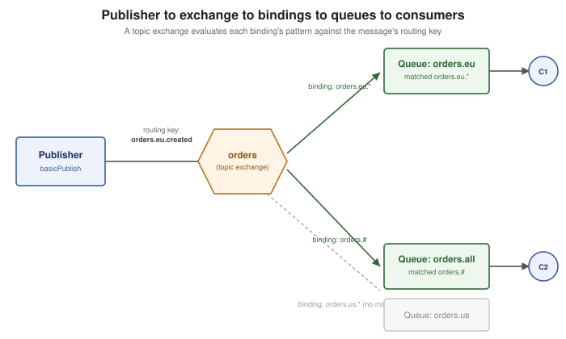

RabbitMQ Architecture and the AMQP Model
|
This content was generated with the assistance of AI and should be verified against the official documentation before being relied on in production. |
Getting Started with Messaging's vocabulary table introduced a RabbitMQ channel, queue and routing key just far enough to send and receive a first message, and Messaging Protocols covers AMQP 0-9-1 itself — the wire-level framing of connections, channels and classes/methods a client and broker actually exchange bytes over. This page sits between the two: it is the conceptual model layered on top of that wire protocol — how a client structures a connection into channels scoped to a virtual host, how a published message gets routed by an exchange, through bindings, into one or more queues, and what a queue and a message actually are, property by property — plus the Erlang/BEAM runtime and clustering metadata store that make all of it work underneath.
Connections, channels, and virtual hosts
A connection is a single, authenticated TCP (or TLS) connection between a client and a broker — opening one is
relatively expensive (a multi-step AMQP 0-9-1 handshake, described in
Messaging Protocols), so an application typically opens few of them, often
just one per process. A channel is what makes a single connection usable for many concurrent operations without
paying that cost again: it is a lightweight virtual connection, multiplexed over one real TCP connection, and
almost every client operation (basicPublish, basicConsume, queueDeclare, and so on) is a method call on a
Channel, not on the Connection itself. RabbitMQ’s own Java client guidance is to give each thread its own
channel rather than share one channel across threads concurrently — a channel is not thread-safe for concurrent
publishing, even though many channels cheaply share one connection.
A virtual host (vhost) is RabbitMQ’s multi-tenancy boundary: a named, logically isolated group of exchanges,
queues, bindings, users and permissions, and policies. A connection selects exactly one vhost at connection time
(the default vhost is named /) and every channel opened on it, and everything that channel declares or
references, is scoped to that vhost alone — two vhosts can each declare a queue named orders without
colliding, and a user granted permissions on one vhost has none on another unless explicitly granted.
package com.example.messaging.rabbitmq;
import com.rabbitmq.client.Channel;
import com.rabbitmq.client.Connection;
import com.rabbitmq.client.ConnectionFactory;
public class MultiplexedChannels {
public static void main(String[] args) throws Exception {
ConnectionFactory factory = new ConnectionFactory();
factory.setHost("localhost");
factory.setVirtualHost("/orders-service"); // scopes every channel below to this vhost
factory.setUsername("orders-service");
factory.setPassword("changeit");
try (Connection connection = factory.newConnection()) {
// one connection, two independent channels -- each is its own lightweight
// multiplexed stream over the same underlying TCP connection
Channel publishingChannel = connection.createChannel();
Channel consumingChannel = connection.createChannel();
System.out.println("publishing channel number: " + publishingChannel.getChannelNumber());
System.out.println("consuming channel number: " + consumingChannel.getChannelNumber());
}
}
}See RabbitMQ Documentation — Connections, RabbitMQ Documentation — Channels and RabbitMQ Documentation — Virtual Hosts for connection lifecycle and leak-monitoring guidance, per-channel resource limits, and the full vhost management CLI/HTTP API.
Exchanges: routing published messages
An exchange is what a publisher actually sends a message to — never directly to a queue. An exchange stores nothing itself; its only job is to decide, for each message it receives, which queue or queues (if any) should get a copy, based on the exchange’s type, the bindings registered against it, and the message’s routing key or headers. AMQP 0-9-1 defines four built-in exchange types:
| Exchange type | Routing rule |
|---|---|
|
Routes to every queue whose binding key exactly equals the message’s routing key. |
|
Ignores the routing key entirely and routes to every queue bound to it — the broadcast case. |
|
Routes to every queue whose binding pattern matches the routing key, where a pattern is a dot-separated
sequence of words with two wildcards: |
|
Ignores the routing key and instead matches the message’s |
Every vhost also has a nameless default exchange — a direct exchange every queue is automatically bound to,
using the queue’s own name as the binding key. Publishing with an empty exchange name and a routing key equal to
a queue’s name (channel.basicPublish("", "orders", …), as
Getting Started with Messaging's first example does) therefore
delivers straight to that queue without declaring any exchange or binding explicitly.
RabbitMQ also ships exchange types beyond the AMQP 0-9-1 spec itself. The consistent-hash exchange
(x-consistent-hash) hashes a message’s routing key (or a chosen header) onto a ring and routes to whichever
bound queue owns that section of the ring, with each binding’s key giving that queue a numeric weight
(equal weights of 1 are recommended for most cases) — it is how a workload gets sharded evenly across many
queues without picking a single hot queue by hand. The local-random exchange (x-local-random, added in
RabbitMQ 4.0) always routes to a queue on the same cluster node the message was published on, chosen at random
among the queues bound there, which minimizes publisher latency for request/reply-style workloads at the cost of
assuming a consumer is online on every node — a message published where no local queue is bound is dropped. See
RabbitMQ Documentation — Local Random Exchange for its
exact semantics and caveats (it is not compatible with routing published traffic through a load balancer in
front of the cluster). A third option, the delayed-message exchange (x-delayed-message, a per-message
x-delay header holding a millisecond delay before routing), is a community plugin rather than a broker-native
feature; as of RabbitMQ 4.3 it is archived and no longer maintained by the RabbitMQ team, does not run on 4.3
at all, and was always capped at roughly 100,000 queued delayed messages with no cluster replication — worth
knowing it exists, not worth reaching for on a current cluster.
package com.example.messaging.rabbitmq;
import java.util.Map;
import com.rabbitmq.client.BuiltinExchangeType;
import com.rabbitmq.client.Channel;
import com.rabbitmq.client.Connection;
import com.rabbitmq.client.ConnectionFactory;
public class OrdersTopicExchange {
public static void main(String[] args) throws Exception {
ConnectionFactory factory = new ConnectionFactory();
factory.setHost("localhost");
try (Connection connection = factory.newConnection();
Channel channel = connection.createChannel()) {
channel.exchangeDeclare("orders", BuiltinExchangeType.TOPIC, true);
channel.queueDeclare("orders.eu", true, false, false, null);
channel.queueDeclare("orders.all", true, false, false, null);
// matches routing keys like "orders.eu.created", "orders.eu.shipped" -- exactly one
// trailing word after "orders.eu"
channel.queueBind("orders.eu", "orders", "orders.eu.*");
// matches every routing key starting with "orders." -- zero or more trailing words
channel.queueBind("orders.all", "orders", "orders.#");
channel.basicPublish("orders", "orders.eu.created", null,
"{\"orderId\":\"order-42\"}".getBytes());
}
}
}orders.eu.created matches both bindings above — orders.eu.* because it has exactly one word after
orders.eu, and orders.# because it starts with orders. — so this single publish delivers one copy to each
queue. See RabbitMQ Documentation — Exchanges for the complete type
reference, exchange-to-exchange bindings, and alternate exchanges (a fallback exchange for otherwise-unroutable
messages).
Bindings and routing keys
A binding is the registered relationship between an exchange and a queue (or, for exchange-to-exchange
bindings, another exchange) — it is what turns an exchange’s routing rule into an actual routing table.
Every binding carries an optional key (the binding key a direct/topic exchange matches the message’s routing
key against) and an optional arguments table (what a headers exchange matches instead). A single queue can
hold many bindings, from the same exchange or different ones, and a single message can therefore be routed to
several queues at once whenever more than one binding matches it — each matching queue gets its own independent
copy. A message an exchange cannot route to any queue at all is, by default, silently dropped; a publisher opts
out of that silence either per-message, with the mandatory publish flag and a registered return listener, or
per-exchange, by configuring an alternate exchange to catch anything the primary exchange couldn’t route.
Queues and their properties
A queue is the actual buffer a routed message sits in until a consumer acknowledges it — unlike an exchange, a queue both stores messages and enforces ordering (broadly FIFO, though priority queues and requeued redeliveries can reorder within it). A queue is declared with four properties beyond its name and type (queue types — classic, quorum, stream — are their own page, RabbitMQ Queue Types):
| Property | Meaning |
|---|---|
|
Whether the queue’s definition survives a broker restart. Independent of whether individual messages in it do — a durable queue can still hold non-persistent messages, which are lost on restart even though the queue itself is redeclared automatically. |
|
Usable only by the connection that declared it, and automatically deleted the moment that connection closes — the common choice for a short-lived, connection-scoped reply queue. |
|
Deleted automatically once its last consumer unsubscribes (and at least one consumer had connected at some point). |
|
An open-ended table of further per-queue settings: |
package com.example.messaging.rabbitmq;
import java.util.Map;
import com.rabbitmq.client.Channel;
import com.rabbitmq.client.Connection;
import com.rabbitmq.client.ConnectionFactory;
public class OrdersQueueWithDeadLettering {
public static void main(String[] args) throws Exception {
ConnectionFactory factory = new ConnectionFactory();
factory.setHost("localhost");
try (Connection connection = factory.newConnection();
Channel channel = connection.createChannel()) {
Map<String, Object> arguments = Map.of(
"x-queue-type", "quorum",
"x-message-ttl", 3_600_000, // 1 hour, in milliseconds
"x-dead-letter-exchange", "orders.dlx"); // where expired/rejected messages go
channel.queueDeclare("orders", true, false, false, arguments);
}
}
}Message attributes and payload
The payload (or body) of a message is an opaque byte array as far as the broker is concerned — exactly like
a Kafka record’s key and value, no schema or format is enforced. Alongside the payload, every message carries a
set of properties (AMQP.BasicProperties in the Java client): contentType/contentEncoding describe the
payload’s format, deliveryMode (1 transient, 2 persistent) controls whether the message itself survives a
broker restart on a durable queue, priority interacts with a priority-enabled queue, correlationId/replyTo
support request/reply patterns, expiration sets a per-message TTL, and headers is an arbitrary string-keyed
table — the same table a headers exchange’s x-match binding matches against, and otherwise free-form
metadata a consumer can read without touching the payload.
AMQP.BasicProperties properties = new AMQP.BasicProperties.Builder()
.contentType("application/json")
.deliveryMode(2) // persistent -- survives a broker restart on a durable queue
.priority(5)
.correlationId("order-42")
.headers(Map.of("trace-id", "4c2f9e"))
.build();
channel.basicPublish("orders", "orders.eu.created", properties,
"{\"orderId\":\"order-42\"}".getBytes());
The Erlang/BEAM runtime
RabbitMQ is written in Erlang and runs on the BEAM, the Erlang/OTP virtual machine — a deliberate choice, not an implementation detail, because BEAM was designed from the outset for the fault-tolerance requirements of telecom switches. Every connection, channel, queue and exchange inside RabbitMQ is its own lightweight BEAM process — not an operating-system thread — and BEAM processes share no memory: a crash inside one process cannot corrupt another’s state, which is what lets a single misbehaving connection be torn down without taking the broker down with it. BEAM additionally gives each process its own, independent heap and garbage collector, so one process pausing to collect garbage never stops every other process on the node the way a shared-heap runtime’s global GC pause would — a broker can host many thousands of concurrent connections, channels and queues without one of them’s GC work becoming a latency spike for the rest. Erlang/OTP’s supervision trees (the "let it crash" philosophy) are what let a broker restart just the specific process that failed, cleanly, instead of treating any single fault as a reason to bring the whole node down.
Clustering and the Khepri metadata store
A RabbitMQ cluster is several nodes, sharing the same Erlang cookie, presenting themselves as one logical broker: a client can connect to any node and see the same vhosts, exchanges, bindings, users, permissions and policies, because that metadata is cluster-wide, not per-node. Where a given queue’s contents actually live depends on its queue type — a classic queue’s messages live on one node, while quorum queues and streams replicate their contents across several (see RabbitMQ Queue Types) — but the metadata describing that topology has to be consistent everywhere regardless.
That metadata was historically stored in Mnesia, a distributed database built into Erlang/OTP itself; Mnesia works well enough in the common case but its failure-recovery behavior under a network partition is hard to reason about and prone to inconsistency once nodes on either side of a split have each accepted writes. Khepri, built by the RabbitMQ team and running the same Raft consensus algorithm quorum queues and streams use, replaces it with well-defined, predictable partition behavior instead — fully supported since RabbitMQ 4.0 and promoted to the default metadata store backend as of RabbitMQ 4.2. An existing cluster still running on Mnesia migrates to Khepri explicitly, and RabbitMQ’s own guidance is to test workloads against it ahead of the eventual release line where Mnesia support is removed entirely. See RabbitMQ Documentation — Metadata store for the migration procedure and the operational differences between the two backends.